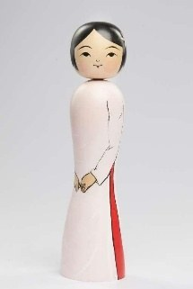

Vietnam Sōsaku Kokeshi là tác phẩm được sáng tác theo phong cách Tsugaru Kokeshi, kết hợp nghệ thuật chế tác Kokeshi truyền thống của Nhật Bản với hình ảnh người phụ nữ Việt Nam trong tà áo dài – biểu tượng của sự thanh lịch, duyên dáng và bản sắc văn hóa Việt Nam.
Tác phẩm được chế tác từ gỗ nguyên khối theo kỹ thuật truyền thống của dòng Tsugaru, đồng thời giữ nguyên ngôn ngữ tạo hình tối giản đặc trưng của Kokeshi. Hình ảnh áo dài trắng với những đường nét mềm mại được thể hiện tinh tế trên thân búp bê, gợi lên vẻ đẹp nhẹ nhàng, kín đáo và thanh cao của người phụ nữ Việt Nam. Sự kết hợp giữa kỹ thuật thủ công Nhật Bản và trang phục truyền thống Việt Nam tạo nên một tác phẩm vừa gần gũi vừa giàu giá trị nghệ thuật.
Trong văn hóa Việt Nam, áo dài không chỉ là trang phục truyền thống mà còn là biểu tượng của vẻ đẹp, sự duyên dáng và niềm tự hào dân tộc. Thông qua tác phẩm này, các nghệ nhân Tsugaru mong muốn gửi gắm thông điệp về sự trân trọng đối với văn hóa Việt Nam, đồng thời khẳng định vai trò của nghệ thuật như một cầu nối giữa các quốc gia. Vietnam Sōsaku Kokeshi vì thế không chỉ là một tác phẩm thủ công mỹ nghệ mà còn là biểu tượng của tình hữu nghị, sự thấu hiểu và giao lưu văn hóa Việt Nam – Nhật Bản.
ベトナム創作こけしは津軽系こけしのスタイルで作られた作品で、日本の伝統こけしの技と、優雅さ・しとやかさ・ベトナム文化のアイデンティティの象徴であるアオザイ姿のベトナム人女性を組み合わせています。
本作は津軽系の伝統技法で一本の木から作られ、こけし特有のシンプルな造形を保っています。柔らかな線で繊細に描かれた白いアオザイは、ベトナム女性の穏やかで慎ましく気品ある美しさを感じさせます。日本の手仕事の技とベトナムの伝統衣装が出会うことで、親しみやすく芸術的価値の高い作品が生まれています。
ベトナム文化においてアオザイは、単なる伝統衣装ではなく、美しさ、しとやかさ、民族の誇りの象徴です。本作を通して津軽の職人たちは、ベトナム文化への敬意と、国と国をつなぐ架け橋としての芸術の役割を伝えようとしています。ベトナム創作こけしは、手工芸品であると同時に、ベトナムと日本の友好、相互理解、文化交流の象徴でもあります。